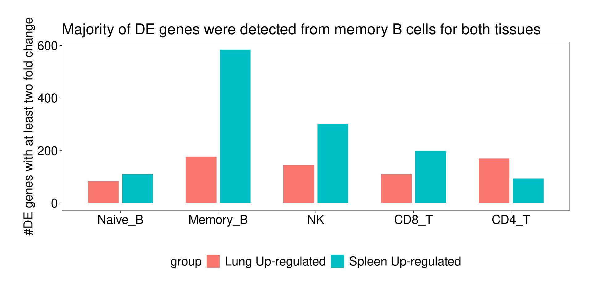

Identify lung-specific transcriptomic features
2025-05-15
Last updated: 2025-05-15
Checks: 7 0
Knit directory: Lung_scMultiomics_paper/
This reproducible R Markdown analysis was created with workflowr (version 1.7.1). The Checks tab describes the reproducibility checks that were applied when the results were created. The Past versions tab lists the development history.
Great! Since the R Markdown file has been committed to the Git repository, you know the exact version of the code that produced these results.
Great job! The global environment was empty. Objects defined in the global environment can affect the analysis in your R Markdown file in unknown ways. For reproduciblity it’s best to always run the code in an empty environment.
The command set.seed(20250512) was run prior to running
the code in the R Markdown file. Setting a seed ensures that any results
that rely on randomness, e.g. subsampling or permutations, are
reproducible.
Great job! Recording the operating system, R version, and package versions is critical for reproducibility.
Nice! There were no cached chunks for this analysis, so you can be confident that you successfully produced the results during this run.
Great job! Using relative paths to the files within your workflowr project makes it easier to run your code on other machines.
Great! You are using Git for version control. Tracking code development and connecting the code version to the results is critical for reproducibility.
The results in this page were generated with repository version 3cae897. See the Past versions tab to see a history of the changes made to the R Markdown and HTML files.
Note that you need to be careful to ensure that all relevant files for
the analysis have been committed to Git prior to generating the results
(you can use wflow_publish or
wflow_git_commit). workflowr only checks the R Markdown
file, but you know if there are other scripts or data files that it
depends on. Below is the status of the Git repository when the results
were generated:
Untracked files:
Untracked: ArchRLogs/
Untracked: Lung_scMultiomics_paper.Rproj
Untracked: _workflowr.yml
Untracked: analysis/ArchRLogs/
Untracked: analysis/about.knit.md
Untracked: analysis/archive.Rmd
Untracked: output/u19_multiomics
Unstaged changes:
Modified: README.md
Modified: analysis/identify_cell_types.Rmd
Modified: analysis/test.Rmd
Note that any generated files, e.g. HTML, png, CSS, etc., are not included in this status report because it is ok for generated content to have uncommitted changes.
These are the previous versions of the repository in which changes were
made to the R Markdown
(analysis/identify_lung_specific_transcriptomic_features.Rmd)
and HTML
(docs/identify_lung_specific_transcriptomic_features.html)
files. If you’ve configured a remote Git repository (see
?wflow_git_remote), click on the hyperlinks in the table
below to view the files as they were in that past version.
| File | Version | Author | Date | Message |
|---|---|---|---|---|
| Rmd | 3cae897 | Jing Gu | 2025-05-15 | added comments |
| html | 53899ad | Jing Gu | 2025-05-15 | Build site. |
| Rmd | dab59d1 | Jing Gu | 2025-05-15 | updated DEG analyses |
| Rmd | 1c96702 | Jing Gu | 2025-05-14 | fixed errors for table |
| html | 497b42c | Jing Gu | 2025-05-14 | Build site. |
| Rmd | 4faa63e | Jing Gu | 2025-05-14 | DEG analyses |
| html | 9008bd6 | Jing Gu | 2025-05-14 | Build site. |
| Rmd | c40f0da | Jing Gu | 2025-05-14 | DEG analyses |
Differential gene expression analyses across tissue
Wilcoxon ranksum test at single-cell leveL gives more conservative results.
Summarizing DE genes by selecting p-value cutoffs
A table of cell counts by tissue and cell-type.
lungs spleens
Other 1654 104
Treg 1336 47
Th17 2732 68
CD4_T 6980 886
CD8_T 12210 421
NK 8067 464
Memory_B 5287 10507
Naive_B 1174 1710A barplot for number of DE genes detected for each cell type except for Th17 and Treg, due to low number of cells in spleen.

Compare and contrast DE genes across immune subsets
A Venn diagram for DE genes shared across cell types other than memory B cells implies DE genes are cell-type specific.

| Version | Author | Date |
|---|---|---|
| 9008bd6 | Jing Gu | 2025-05-14 |
A full summary of shared and unique DE genes across cell types
UpSet-style plot only shows the count of elements specific to each intersection.
Lung up-regulated genes

| Version | Author | Date |
|---|---|---|
| 9008bd6 | Jing Gu | 2025-05-14 |
Check the lung up-regulated genes shared across all immune subsets
[1] "HSP90AA1 HSPA1A HSP90AB1 HSPD1 RPS26 DNAJB1 HSPA6 HSPA1B HSPH1 HSPE1 HSPB1 CACYBP HSPA8 UBC DOK2 BAG3 STIP1 ABHD3 PLIN2 ZFAND2A GNLY FKBP4 TNFRSF1B GBP2 CGAS MT2A HSPA4 NKG7 AHSA1 SERPINH1 CCL4L2 GZMB GIPC1"Spleen up-regulated genes

| Version | Author | Date |
|---|---|---|
| 9008bd6 | Jing Gu | 2025-05-14 |
GO enrichment results
Lung Up-regulated genes
Overall, lung up-regulated genes are enriched for immune-related hallmark gene sets and GO terms for T cell activation, response to cytokines, and regulation of cell adhesion. Particularly, lung-specific genes in CD4+T and memory B cells are enriched for Th1/Th2 differentiation.
[[1]]
| Version | Author | Date |
|---|---|---|
| 9008bd6 | Jing Gu | 2025-05-14 |
[[2]]
| Version | Author | Date |
|---|---|---|
| 9008bd6 | Jing Gu | 2025-05-14 |
Spleen Up-regulated genes
Overall, spleen up-regulated genes are less enriched for GO terms at a higher threshold at FDR < 0.1.
The DE genes down-regulated in lung detected from memory B cells are significantly enriched for asthma risk genes from KEGG pathway. The overlapped genes are HLA genes and CD40. Their function in B cells might be enhancing subsequent interaction with T cells.
[[1]]
| Version | Author | Date |
|---|---|---|
| 9008bd6 | Jing Gu | 2025-05-14 |
[[2]]
| Version | Author | Date |
|---|---|---|
| 9008bd6 | Jing Gu | 2025-05-14 |
K-means clustering for log2FC
We performed K-means clustering over log2FC for all genes with at most one NA across cell types.
[1] "Number of genes in each k-mean cluster:"
1 2 3 4 5 6 7 8 9 10 11 12 13 14 15 16
35 847 158 634 718 469 292 816 35 160 683 865 921 1198 207 873 [1] "The pair-wise correlation of genes for most clusters form a distribution skewed to 1."
| Version | Author | Date |
|---|---|---|
| 9008bd6 | Jing Gu | 2025-05-14 |
Heatmap for average log2FC for each cluster
Clustering for effect sizes does not show cell type specificity except for memory B cells.

| Version | Author | Date |
|---|---|---|
| 9008bd6 | Jing Gu | 2025-05-14 |
Heatmap for average log2FC for each cell-type (Memory B excluded)
Clustering for effect sizes shows stronger cell-type specificity.

Several clusters were selected by having distinct cluster mean in one cell type compared to the rest to perform GSEA. The pattern is less clear to me. Currently all genes contained in each cluster were used to perform GSEA, so I may try top hundreds of genes for the analysis.
[[1]]
[[2]]
`
<br>
<p>
<button type="button" class="btn btn-default btn-workflowr btn-workflowr-sessioninfo"
data-toggle="collapse" data-target="#workflowr-sessioninfo"
style = "display: block;">
<span class="glyphicon glyphicon-wrench" aria-hidden="true"></span>
Session information
</button>
</p>
<div id="workflowr-sessioninfo" class="collapse">
R version 4.2.0 (2022-04-22) Platform: x86_64-pc-linux-gnu (64-bit) Running under: CentOS Linux 7 (Core)
Matrix products: default BLAS/LAPACK: /software/openblas-0.3.13-el7-x86_64/lib/libopenblas_haswellp-r0.3.13.so
locale: [1] LC_CTYPE=en_US.UTF-8 LC_NUMERIC=C LC_TIME=C
[4] LC_COLLATE=C LC_MONETARY=C LC_MESSAGES=C
[7] LC_PAPER=C LC_NAME=C LC_ADDRESS=C
[10] LC_TELEPHONE=C LC_MEASUREMENT=C LC_IDENTIFICATION=C
attached base packages: [1] stats4 grid stats graphics grDevices utils datasets [8] methods base
other attached packages: [1] ggVennDiagram_1.5.2
SingleCellExperiment_1.20.1 [3] ComplexHeatmap_2.14.0
htmltools_0.5.8.1
[5] scales_1.3.0 colorRamp2_0.1.0
[7] rtracklayer_1.58.0 tidyr_1.3.1
[9] dplyr_1.1.4 rhdf5_2.42.1
[11] SummarizedExperiment_1.28.0 Biobase_2.58.0
[13] MatrixGenerics_1.10.0 Rcpp_1.0.14
[15] Matrix_1.6-5 GenomicRanges_1.50.2
[17] GenomeInfoDb_1.34.9 IRanges_2.32.0
[19] S4Vectors_0.36.2 BiocGenerics_0.44.0
[21] matrixStats_1.5.0 data.table_1.17.0
[23] stringr_1.5.1 plyr_1.8.9
[25] magrittr_2.0.3 ggplot2_3.5.2
[27] gtable_0.3.6 gtools_3.9.5
[29] gridExtra_2.3 ArchR_1.0.2
[4] RColorBrewer_1.1-3 rprojroot_2.0.4 tools_4.2.0
[7] bslib_0.9.0 DT_0.33 R6_2.6.1
[10] colorspace_2.1-1 rhdf5filters_1.10.1 GetoptLong_1.0.5
[13] withr_3.0.2 tidyselect_1.2.1 compiler_4.2.0
[16] git2r_0.33.0 cli_3.6.4 Cairo_1.6-2
[19] DelayedArray_0.24.0 labeling_0.4.3 sass_0.4.9
[22] yulab.utils_0.2.0 digest_0.6.37 Rsamtools_2.14.0
[25] rmarkdown_2.29 XVector_0.38.0 pkgconfig_2.0.3
[28] fastmap_1.2.0 htmlwidgets_1.6.4 rlang_1.1.5
[31] GlobalOptions_0.1.2 rstudioapi_0.17.1 gridGraphics_0.5-1
[34] farver_2.1.2 shape_1.4.6 jquerylib_0.1.4
[37] BiocIO_1.8.0 generics_0.1.3 jsonlite_2.0.0
[40] crosstalk_1.2.1 BiocParallel_1.32.6 RCurl_1.98-1.17
[43] ggplotify_0.1.2 GenomeInfoDbData_1.2.9 patchwork_1.3.0
[46] munsell_0.5.1 Rhdf5lib_1.20.0 lifecycle_1.0.4
[49] stringi_1.8.4 whisker_0.4.1 yaml_2.3.10
[52] zlibbioc_1.44.0 parallel_4.2.0 promises_1.3.2
[55] forcats_1.0.0 crayon_1.5.3 lattice_0.22-7
[58] Biostrings_2.66.0 circlize_0.4.15 knitr_1.50
[61] pillar_1.10.2 rjson_0.2.23 codetools_0.2-20
[64] XML_3.99-0.18 glue_1.8.0 evaluate_1.0.3
[67] ggfun_0.1.8 vctrs_0.6.5 png_0.1-8
[70] httpuv_1.6.15 foreach_1.5.2 purrr_1.0.4
[73] clue_0.3-66 cachem_1.1.0 xfun_0.52
[76] restfulr_0.0.15 later_1.4.2 tibble_3.2.1
[79] aplot_0.2.5 iterators_1.0.14 GenomicAlignments_1.34.1 [82] cluster_2.1.8.1 workflowr_1.7.1
```